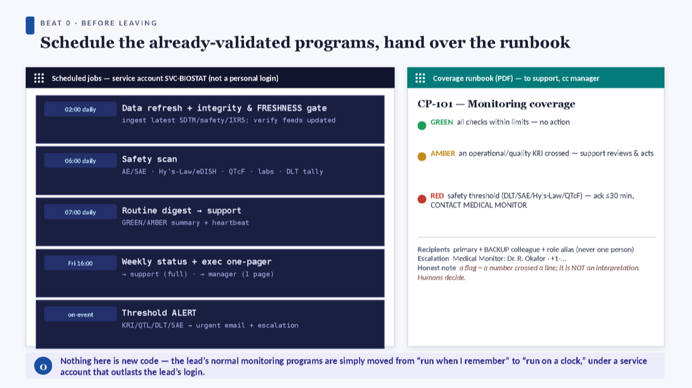
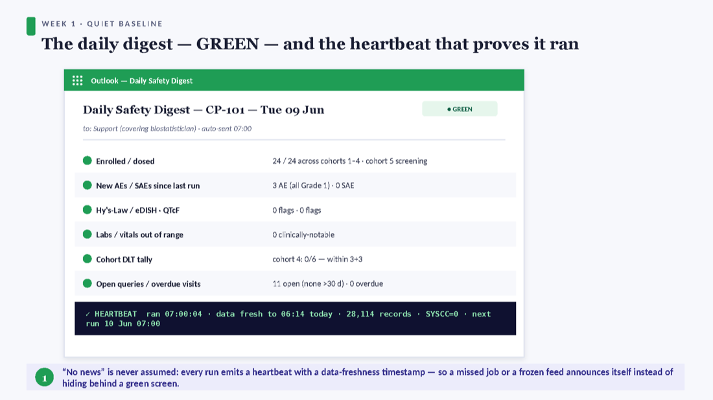
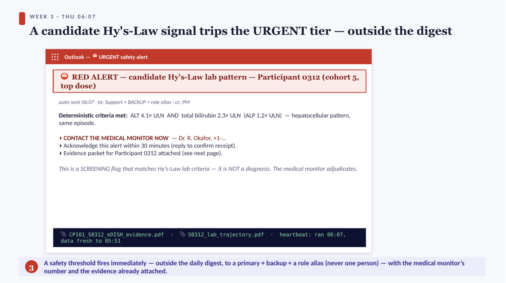
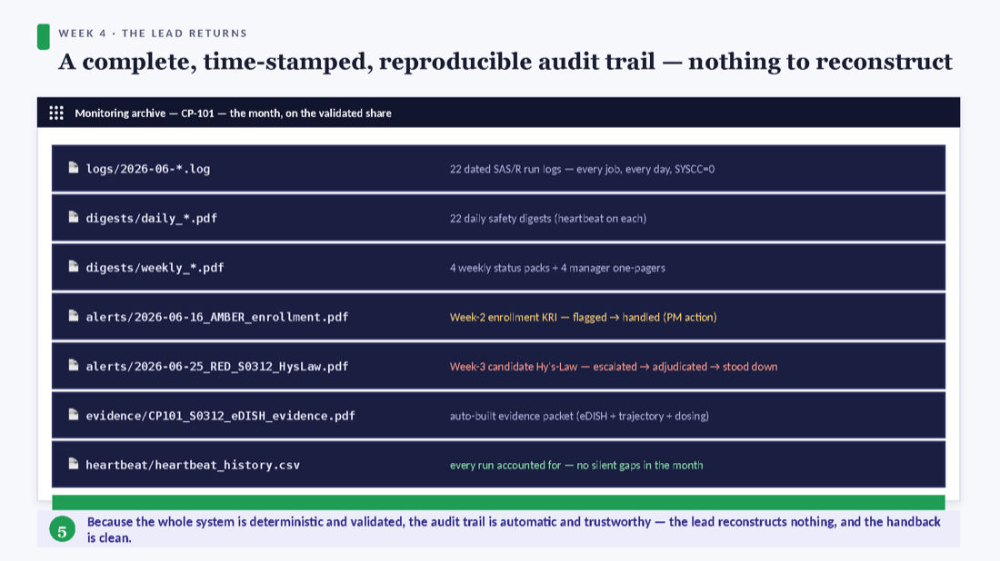

Coverage while on leave — a SAS/R playbook
Going on leave for a month? This playbook sets up deterministic, automated trial monitoring in SAS and/or R so monitoring never stops, the covering colleague gets the right updates, escalation is automatic, and your manager has peace of mind — with no AI, no new tools, and no PHI egress, all inside the existing validated environment.
What this playbook gives you
- A pre-departure checklist — schedule the already-validated programs under a service account.
- A two-tier notification design — a daily digest + an urgent threshold alert — with a heartbeat so silence is never assumed.
- A ready macro library (
tm_macros.sas+ a driver, and an R companion) for maximum ease of automation. - A coverage runbook to hand the covering biostatistician and your manager.
See it run for a full month in Watch it work.
Before you leave — the pre-departure checklist
You don’t write new code — you schedule the monitoring programs that already run on demand.
| ✓ | Item | Why |
|---|---|---|
| □ | Run everything under a service / functional account (e.g. SVC-BIOSTAT) — not your personal login. | Your credentials/VPN go idle on leave; a personal-owned job dies the moment they do. The #1 silent-failure cause. |
| □ | Confirm the service account has the SAS licence, share access, and SMTP relay rights. | Verify before you go, not after a missed run. |
| □ | Schedule the jobs (Task Scheduler / cron): 02:00 refresh+freshness, 06:00 safety scan, 07:00 digest, Fri 16:00 weekly + manager one-pager, on-event alert. | Moves them from “run when I remember” to “run on a clock.” |
| □ | Set thresholds (KRIs/QTLs/DLT/Hy’s-Law/QTcF) to the protocol’s pre-specified values. | Deterministic flags must be pre-specified to stay defensible. |
| □ | Set recipients: primary + backup + a role alias; the medical monitor’s name/number; the PM; cc your inbox for the return. | So a 6 a.m. alert never depends on one inbox. |
| □ | Hand over the coverage runbook (PDF) to the covering biostatistician, cc the manager. | Plain-language GREEN/AMBER/RED, who does what, the honest limit. |
| □ | Do a dry run the week before; confirm the heartbeat and a test alert arrive. | Prove the whole loop fires before you’re unreachable. |
When you return — the hand-back
Re-entry is a checklist too, not a glance at the inbox.
| ✓ | On return |
|---|---|
| □ | Read the escalation log end to end — confirm every AMBER/RED and exactly how it resolved. |
| □ | Check the heartbeat history — every run accounted for, and any gap explained, not silently missed. |
| □ | Re-assign backup= from the cover back to you; restore the recipient list. |
| □ | Close out any open AMBER/RED items with the PM and the medical monitor. |
| □ | Debrief the covering biostatistician — note anything to tune (thresholds, routing) for next time. |
Watch it work — a month on Study CP-101
The deterministic system keeping Phase 1 monitoring alive and self-escalating for a month while the lead is unreachable in Europe.






Prefer text? The full narration is on the Transcript page; the video is captioned, and the PDF of this playbook contains every section in reading order.
Walkthrough transcript
The complete narration of the “Watch it work” video, as readable text — an alternative to the video and a captioned reference.
1. Intro
Here's the third companion pipeline — the one you can ship today. It uses strictly SAS and R, no AI, to keep trial monitoring running while the lead biostatistician is away for a month. Let me walk through a real month on Study CP-101: how it's set up, what the covering colleague and the manager receive, and what happens when a real safety signal fires — all inside the existing validated environment.
2. Before leaving — the setup
Before leaving, the lead doesn't write new code — they schedule the monitoring programs that already run on demand. Five jobs: a nightly data refresh with a freshness check, a morning safety scan, a daily digest to the covering colleague, a weekly status pack plus a one-page summary for the manager, and an on-event threshold alert. It all runs under a service account that outlasts the lead's login. And a one-page coverage runbook goes to the support and the manager: what green, amber, and red mean, who does what, and the honest note that a flag is a number crossing a line — not an interpretation.
3. Week 1 — the GREEN digest & heartbeat
Week one is quiet. Every morning the covering colleague gets the digest — enrollment, new adverse events, liver and QT flags, the cohort DLT tally, queries — all green. The most important line is at the bottom: the heartbeat. It confirms the job ran, on data fresh as of this morning, with no errors. That's the trick to an unattended month: silence is never assumed. A missed job or a frozen feed announces itself, instead of hiding behind a green screen.
4. Week 2 — the AMBER enrollment dip
Week two, an operational signal. Enrollment slips below its KRI floor — seventy-six percent of plan, with a screen-failure cluster at one site. The digest renders that row amber. Notice where it goes: it stays in the routine channel. The covering colleague reviews it and raises a site action with the project manager — it does not cry wolf at the medical monitor. And the manager's Friday one-pager simply shows it was flagged and is being handled.
5. Week 3 — the RED urgent alert
Week three, a real safety signal. Overnight, a participant in the top dose cohort shows a candidate Hy's-Law lab pattern — ALT over three times the upper limit, and bilirubin over twice it. This trips the urgent tier, outside the digest, immediately — to the support, a backup, and a role alias, never just one person. The email carries the medical monitor's number, a thirty-minute acknowledgement requirement, and, crucially, it's honest that this is a screening flag that matches the lab criteria — not a diagnosis. The medical monitor adjudicates.
6. Week 3 — the evidence & escalation
And it doesn't just say something happened — it attaches the evidence, already assembled: the eDISH plot with the participant in the Hy's-Law quadrant, the lab trajectory, the dosing timeline, and the exact rule that fired. On the right is the escalation log, time-stamped automatically: the alert fired at six-oh-seven, was delivered, acknowledged within the SLA, reviewed by the medical monitor — who ordered repeat labs and held dosing — and by Sunday the signal didn't confirm and the cohort was released. The system did three deterministic things: detected, paged, packaged. Every clinical decision was the medical monitor's.
7. Week 4 — the audit trail
Week four, the lead is back. Waiting for them is a complete, time-stamped archive: every daily log, every digest with its heartbeat, the two notable alerts and how they resolved, the auto-built evidence packet, and a heartbeat history proving every run was accounted for. Because the whole system is deterministic and validated, there's nothing to reconstruct — no question of what an AI decided and why, no PHI egress to explain. The loop closed itself: flag, escalate, package, decide, stand down.
8. The four safeguards
The reason a manager can trust this is that it's designed so it can't fail silently. Four safeguards. A heartbeat with an independent watcher, so a dead job announces itself. A data-freshness gate that runs first, so a clean green on stale data — which is worse than red — gets caught. Alert de-duplication, so one real event alerts once instead of a storm that buries the next signal. And primary plus backup recipients with an acknowledgement requirement, so a six a.m. alert never lands in a void. The rule in the SOP: no news is never interpreted as good news.
9. The bottom line
So, the bottom line. This is the lowest-risk of the three pipelines — no AI, no new vendor, no PHI egress, no new validation surface — so there's no approval gate between today and go-live. It's deterministic and reproducible, so the audit trail is automatic. It detects, pages, and packages; the humans and the medical monitor still make every call. And it's necessary, not sufficient: the narrative-triage layer is exactly the seam the AI hybrid fills later. Ship this now; add AI on top when it's approved. The peace of mind is simple — monitoring never stops, even silence is verified, and every escalation is automatic and logged, while the lead is unreachable in Europe.
The coverage runbook
The one page you hand the covering colleague (the covering biostatistician), cc the manager. Download the full runbook (PDF).
| Status | Means | Who does what |
|---|---|---|
| GREEN | All checks within limits. | No action. The heartbeat still confirms the run happened on fresh data. |
| AMBER | An operational/quality KRI crossed. | The covering biostatistician reviews & acts (e.g. a site action with the PM). Stays in the routine channel. |
| RED | A safety threshold (DLT/SAE/Hy’s-Law/QTcF). | The covering biostatistician acknowledges ≤30 min, then CONTACTS THE MEDICAL MONITOR. Evidence packet attached. |
The macro library — maximum ease of automation
A deterministic, no-AI SAS macro library (with an R companion) that implements the whole loop: ingest → freshness gate → checks → roll-up → digest, plus a tier-2 urgent alert and a heartbeat. Map the placeholder column names to your validated ADaM/SDTM specs.
Quick start
%include "tm_macros.sas";
%tm_init(study=CP101, root=/opt/trialmon/cp101, smtp=smtp.internal, statelib=.../state);
%tm_freshness(feeds=adam.adlb adam.adeg adam.adae, maxage=26); /* GATE first */
%tm_chk_hyslaw(in=adam.adlb_edish); %tm_status(in=_tm_hyslaw); /* deterministic flag */
%tm_chk_qtcf(in=adam.adeg); %tm_status(in=_tm_qtcf);
%tm_chk_enroll(in=adam.enroll, kri=0.80);
%tm_digest(title=CP-101 Daily Safety Digest, sections=_tm_enroll _tm_qtcf _tm_hyslaw, to=&support);
%tm_alert(in=_tm_red_new, to=&support, backup=&backup, alias=&alias,
mm_name=%str(Dr. Okafor), mm_phone=+1-555-0100, evidence=&packet);
%tm_heartbeat(records=&n, watcher_to=&backup);
Schedule it (service account)
:: Windows Task Scheduler schtasks /create /tn "CP101_monitor" /tr "run_monitor.bat" /sc DAILY /st 06:00 /ru SVC-BIOSTAT # Linux cron 0 6 * * 1-5 /opt/jobs/run_monitor.sh # sas -sysin monitor_driver.sas -batch
The macros cover the safety checks (Hy’s-Law/eDISH, QTcF, AE/SAE, DLT-vs-3+3, labs), operational checks (enrollment KRI, query aging, visits, IXRS reconciliation), the two-tier digest/alert, and the four safeguards (heartbeat, freshness gate, de-dup, primary+backup). See the README in the macro library for the full catalog.
Why it won’t fail silently
| Failure mode | The safeguard |
|---|---|
| The job dies silently (daemon down, expired password, locked licence, full disk). | Heartbeat / dead-man’s switch — every run pings “ran OK”; an independent watcher on a second host escalates if the ping is missing. |
| Stale-data masquerade — green daily, but a feed stopped refreshing. Green here is worse than red. | Data-freshness gate, run first — compare each feed’s newest timestamp to now; raise it if a source stopped. |
| Alert storm — a mis-set threshold or duplicate fires the same RED dozens of times; the cover mutes the thread. | De-duplication — a persistent seen-flags table alerts each finding once. |
| Human single-point-of-failure — the one cover is also away when a 06:07 RED fires. | Primary + backup + role alias with an acknowledgement SLA and a re-page rule. |
Governance & honest limits
Why this is the lowest-risk option
- No new validation surface. It surfaces outputs from the same validated programs — it automates the delivery/cadence, not the method.
- Deterministic & reproducible. Same data → byte-identical result, every run. Nothing to “explain”; the audit trail is automatic.
- Zero PHI egress. Everything runs where the data already lives — no external API, no cloud model, no new vendor. (Alert bodies carry de-identified signal only; detail is in the attached report.)
- Validated like any study program (spec → review → test → change control); anything reported stays independently double-programmed. A flag is a prompt, not a result — every reported number comes from the validated tools (Phoenix WinNonlin, Pinnacle 21, the double-programmed SAS/R), never from a monitoring flag.
- No new approval gate between today and go-live — only the normal program validation you already run.
FAQ
Do we need new software? No — use the SAS/R and scheduler already validated in your environment. Introducing a new orchestrator just for this re-adds the governance cost you’re avoiding.
Does it make clinical decisions? No. It detects threshold crossings, pages the right people, and packages the evidence. The medical monitor and covering biostatistician decide.
Is it only for leave coverage? No — that’s the anchoring scenario, but it’s the standing monitoring backbone for any study, any time.
What if a job fails while I’m away? The heartbeat and freshness gate make a dead job or a frozen feed announce itself. “No news” is never “good news.”